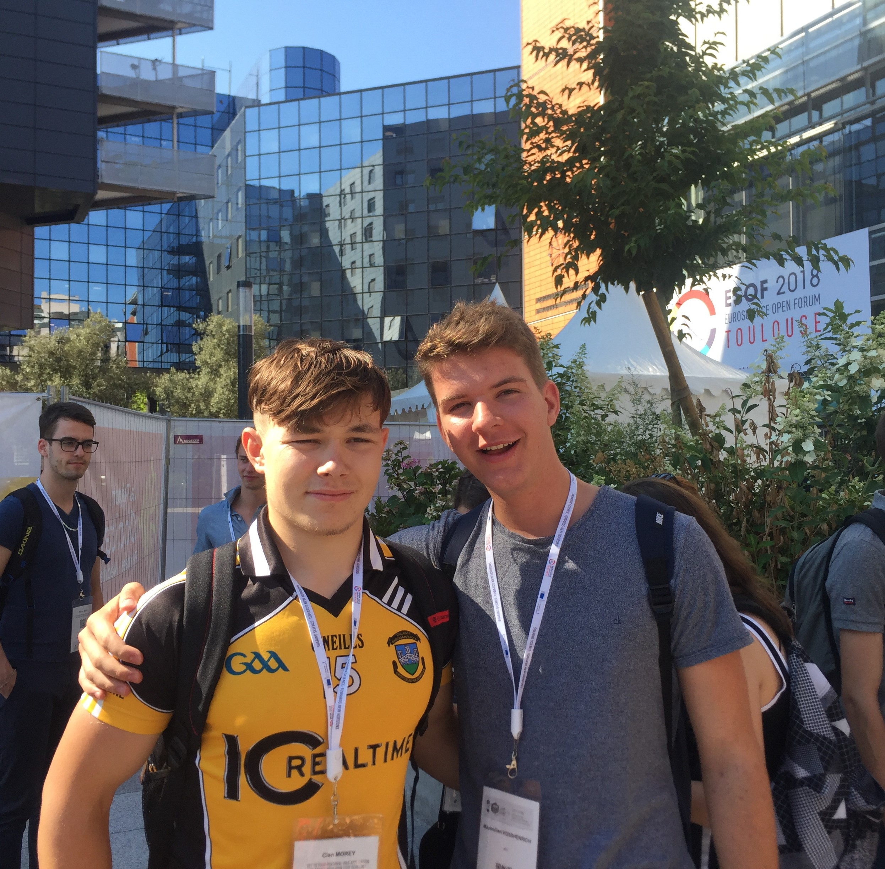

-
In June 2017, a number of students and I was selected to represent Ireland in the European Student Parliment. We were sent to the beautifal city of Toulouse in the South of France where Parliment was to meet.
-
Each countries' delegates were housed within the student accomodation on Toulouse University Campus, only a 5 minute walk from the city center. The weather was bright and warm and the city was full of awe inspiring sights such as the main square, full of market stalls and the river bank.
-
At night we would often visit a different restaurant, my favourite was definately Mona Pizza which made one of the the tastiest meat pizzas I have ever tasted. To match the deliciousness of the main course, for dessert we decided to visit a local ice cream shop and sat out in the warm summer evening, cooling off with our frozen treats.
-
One of the funniest memories from that week was the time my friend from Israel, Carmen, found her room completely full of cockroaches and was forced to move to a different dorm room. Her bed, her suitcase and clothes, even the fridge had cockroaches inside it. It was hilarously disgusting. I hope that some day I can return to that wonderful city, with a higher standard accomodation next time.
Activities
| Shop in the main square markets |
| See the Canal du Midi |
| Visit the Science Fair |
| Late night dancing by the river bank |
| Open mike night in the Kraken Paradise |
|